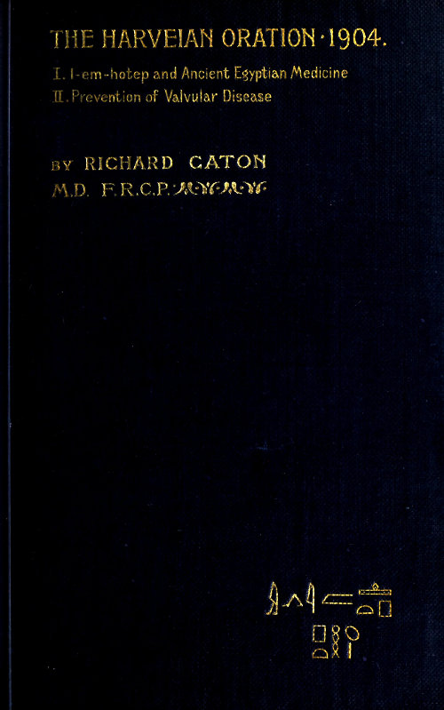
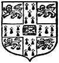
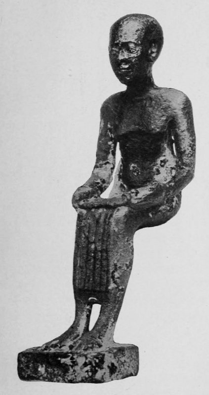
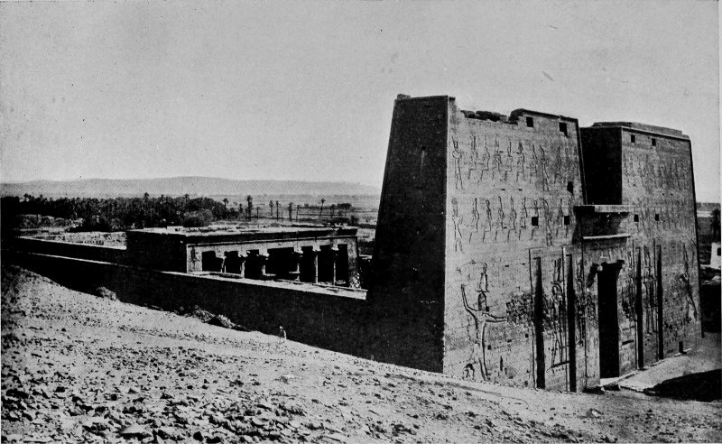
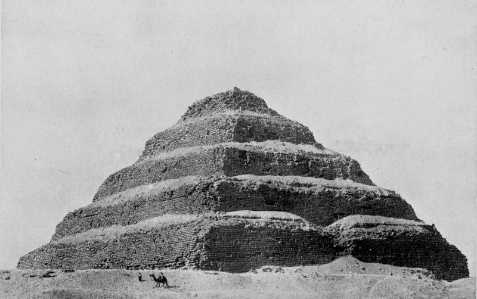
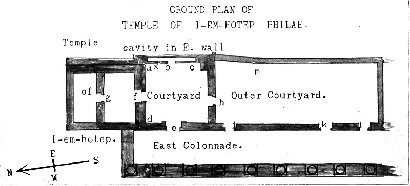
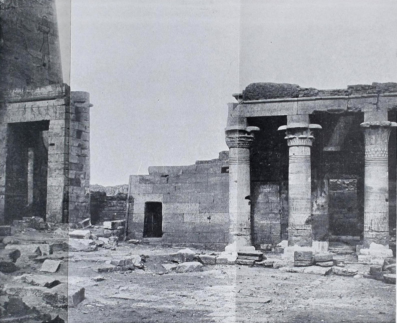
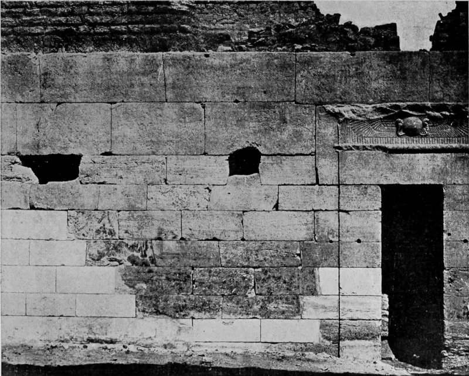
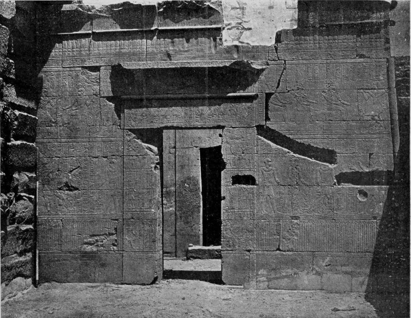

LONDON:
C. J. CLAY AND SONS
CAMBRIDGE UNIVERSITY PRESS WAREHOUSE, AVE MARIA LANE
GLASGOW: 50 Wellington Street

LEIPZIG: F. A. Brockhaus
NEW YORK: The Macmillan Company
BOMBAY: Macmillan & Co., Limited
I. I-em-hotep and Ancient Egyptian Medicine
II. Prevention of Valvular Disease
DELIVERED BEFORE THE ROYAL COLLEGE OF PHYSICIANS ON JUNE 21, 1904
BY
RICHARD CATON, M.D., F.R.C.P.
EMERITUS PROFESSOR OF PHYSIOLOGY, UNIVERSITY OF LIVERPOOL;
CONSULTING PHYSICIAN, ROYAL INFIRMARY
With Seven Illustrations
PRINTED AT THE UNIVERSITY PRESS OF LIVERPOOL
LONDON: C. J. CLAY AND SONS
CAMBRIDGE UNIVERSITY PRESS WAREHOUSE, AVE MARIA LANE
1904
ALL RIGHTS RESERVED
TO
Sir WILLIAM SELBY CHURCH, Bart., K.C.B., M.D.
THE PRESIDENT
AND TO
THE FELLOWS
OF THE ROYAL COLLEGE OF PHYSICIANS OF LONDON
THIS ORATION IS DEDICATED
WITH MUCH RESPECT
Mr. President and Gentlemen, The officials fellows and friends of this college assemble to-day, as we and our predecessors have assembled year by year for two-and-a-half centuries, to commemorate the services which William Harvey has rendered to mankind, and in order to keep alive in our own minds the wise counsels which he addressed to us, the memory of which he desired us ever to renew at the festival which he founded. We are to honour our great profession, to continue in mutual love and affection among ourselves, and to search and to study out the secrets of nature by way of experiment in order to prevent suffering and to ameliorate human life.
In commencing the pleasing duty which the kindness of our President has placed in my hands it is needful to comply with the desire of our founder that we commemorate the names of 2 benefactors of this college. The lengthy and honourable roll was so fully dealt with by the learned orator of last year that I shall merely add to his recital the names of those who since that time have given of their substance for the advancement of medicine. Dr. Horace Dobell of Parkstone Heights, Dorset, gave the sum of £500 to encourage research into the ultimate origin, evolution, and life-history of bacilli and other pathogenic micro-organisms; Dr. George Oliver, Fellow of this College, of Harrogate, and Farnham, Surrey, has given £2,000 to found the Oliver-Sharpey lectureship or prize in memory of William Sharpey of University College, and to encourage the application of physiological knowledge for the prevention and cure of disease and for the prolongation of life; and Lady Clark has presented to us a bust of our revered and lamented former president, Sir Andrew Clark.
No student of the works of Harvey can fail to bear in mind the great loss we have sustained this year in the decease of Sir Edward Sieveking, who in his Harveian Oration drew special attention to the Prelectiones Anatomiae and in conjunction with Dr. George Johnson and other Fellows of this College arranged for the admirable autotype reproduction of Harvey’s manuscript which we possess.
Desiring to render this address as little wearisome as may be I propose to divide it into two parts: the first archaeological, dealing with Egyptian medicine, the medicine god, and the earliest inquiries known to have been made concerning the circulation and circulatory diseases—viz., those of the physicians of ancient Egypt, a department of pre-Harveian work, and perhaps the only one, which has not been dealt with in this room. Secondly, I wish to speak with great brevity on the more practical subject of the preventive treatment of certain forms of circulatory disease.
To all who love our venerable and beneficent profession the spectacle of our predecessors in early ages striving in darkness and difficulty to acquire that hidden knowledge to which we have partially attained is interesting and should awaken our sympathy. As was remarked by the learned Harveian Orator of 1896: ‘The past is worth our study and ever more so the further we advance.’[1]
The information which archaeological research has of late afforded, though in a fitful and partial manner, as to the earliest history of medicine, and particularly in regard to that department in which our founder laboured, is not unworthy of our attention.
The first evidence of definite inquiry, in any degree worthy to be called scientific by a body of men specially educated for, and devoting their lives to medical service, occurs in the early history of Egypt. The ability, learning, and artistic skill shown during the early dynasties, which all Egyptologists recognize, are paralleled by the remarkable interest then manifested in medicine. Works on anatomy and medicine are stated to have been written even by the early sovereigns of Egypt. Athothis, the son of Menes, who lived six thousand years ago,[2] is stated in the Berlin papyrus to have written a book on medicine, and I shall soon have to quote from the anatomical writings of the Pharaoh Usaphais, one of his successors; Semti, the seventh monarch of the same dynasty, pursued similar investigations. It is clear that, like the Greeks, these men in the childhood of the world believed that ὑγιαίνειν μὲν ἄριστον ἐστιν, sanitation was to them the first of the sciences.

PLATE I
Ancient bronze figure of I-em-hotep, the Egyptian God of Medicine
(By the kind permission of the Committee and Curator of the Liverpool Museum)
During the third dynasty, about the year 3,500 B.C. there lived a learned physician (probably a priest of Ra, the sun-god) the founder of a cult, whose eminence was such that in course of ages he is deified and becomes for later generations the special god of medicine. His temples were places of healing for the people. His name is I-em-hotep, meaning ‘he who cometh in peace.’ According to ancient inscriptions he was the son of a certain architect named Kanofer, but when raised in popular esteem to the rank of a demi-god he is called the son of the supreme god Ptah, the Hephaistos of Egypt, and he becomes one of the great god-triad of Memphis. I-em-hotep is described as ‘the good physician of gods and men, a kind and merciful god, assuaging the sufferings of those in pain, healing the diseases of men, giving peaceful sleep to the restless and suffering’; he is called ‘the creative god who giveth life to all men, who comes unto them who call upon him in every place, and who gives sons to the childless.’[3] He was great in magic and all learning. He and his followers had to do with the embalming of the body, and he protected the soul of the dead man from all spiritual enemies after it had left the body. In the ritual of embalmment the dead man was encouraged by these words, ‘Thy soul uniteth itself to I-em-hotep; while thou art in the funeral valley thy heart rejoiceth because thou dost not go into the dwelling of Sebek, but thou are like a son in the house of his father.’[4]
From the testimony of temple inscriptions and papyri, as well as from the writings of Manetho, it is clear that the cult of the medicine-god 6 I-em-hotep was established first in early times at Memphis. In, or adjacent to, some temple—perhaps that of Ra—I-em-hotep and his assistant priests gave advice and medical aid to multitudes of the sick and ailing. It is evident that he gained great renown for his skill and learning. When at length he died he was buried in or near the temple. The priests whom he had taught continued there the work of healing, always in association with his name. Just as the Greeks came to Epidaurus to be healed by Asklepios, so did the Egyptians, many centuries earlier, visit Memphis to seek help from I-em-hotep. It seems probable that in course of time the temple formerly dedicated to some well-known Egyptian god ceased to be known by his name, and in popular speech became the house of I-em-hotep. There is the clearest evidence of the existence of an important temple in later times dedicated to I-em-hotep at Memphis.
A hieroglyphic inscription describes I-em-hotep appearing in a vision to the high priest of Memphis, and addressing him thus:—‘I desire that a great building be erected in the holy place at Anche-tewej (a part of Memphis), where my body is hidden, for building it I will give thee the reward of a son.’[5] We know this temple was built. Later again, similar temples were erected elsewhere; doubtless priest physicians were transferred from Memphis to new centres, just as to 7 Greece and Magna Graecia Epidaurus sent forth trained priests to establish Asklepieia at Athens, Cos, or Pergamos.
As the centuries and millenniums passed on the cult of I-em-hotep seems to have become more and more popular. In later times, when Greek colonists appeared in Egypt, they gave him the name Imouthes, and applied to his temples the Greek term ‘Asklepieia,’ clearly regarding him as alike in kind to the Greek Asklepios and his temples as hospitals for the sick. The following phrase occurs in the Serapeum Greek papyrus:—
‘τὸ πρὸς Μέμφιν μέγα Ἀσκληπιείον’[6]
The great temple stood outside the eastern wall of Memphis close to the Serapeum. We may reasonably hope that a careful examination of the site may yet reveal to us traces of the temple and perhaps even the tomb and remains of I-em-hotep himself. Some of those who are present to-day when visiting the site of the temple of I-em-hotep have been impressed by the thought that on this spot, long before Asklepios, the source, or Hippocrates, commonly called the father of medicine, were born, probably before the Homeric poems were written, before the Israelites were in Egypt, before the Stone Age had passed, learned men here devoted themselves to the consideration 8 of the nature of human life, strove to prolong it, to assuage suffering, and to cure disease. They studied and treated many of the ailments familiar to us, such as tubercle, leprosy, plague, anaemia, and other diseases prevalent in Egypt to-day. Near the site of this temple, securely sealed in an earthen vessel which had been hidden in the sand, was found one of the medical papyri from which I shall quote some passages; doubtless it belonged to an early physician who sought, perhaps during the invasion of Ethiopian or other barbarians, to preserve for mankind the precious knowledge that seemed in danger of extinction.
As we should naturally expect in the case of one so eminent, the Egyptian artists made many drawings and bronze figures of I-em-hotep; they usually represent him as a man rather than as a god, with few mystic or metaphorical emblems excepting those related to learning or human life. He is represented in art as a bald-headed man, usually in a sitting posture, bearing on his knees an open papyrus scroll, and sometimes holding in his hand the symbol of life.[7]
I-em-hotep rises before us as one of those intellectual giants who take all knowledge for their province. In his comprehensiveness he surpasses Leonardo da Vinci or our own Linacre; he is distinguished as a physician, a minister of the king, a priest, a writer, an architect, an alchemist, and an astronomer—great in all, but greatest in medicine; so eminent that in the view of Egypt he is a god.

PLATE II
The Temple of Edfu
The earliest portions of which are believed to have been built by I-em-hotep.

PLATE III
The Step-pyramid of Sakkara
Supposed to have been built by I-em-hotep for the Pharaoh Tosorthros.
In the reign of Tosorthros, of the third dynasty, five or six thousand years ago, we meet with the wise I-em-hotep in an inscription referring to the seven years of famine which befell Egypt in consequence of a succession of low Niles. He is there the adviser of Pharaoh; to him the king applies in his trouble for counsel and help.[8] In the inscriptions in the temple of Edfu[9] he is described at length as the great priest I-em-hotep, the son of Ptah, who speaks or lectures.[10] Perhaps his discourses or lectures were on medicine. Elsewhere he is described as the writer of the divine books. It may here be remarked that probably Ebers’ papyrus was one of the six divine books attributed to Thoth ceremonially, but not improbably in large part the work of I-em-hotep. Manetho, while speaking of his eminence as a physician, refers to him also as an architect, the first to build with hewn stone.[11] Not improbably he built the step pyramid of Sakkara, the tomb of his patron Tosorthros.[12] Manetho also suggests that I-em-hotep improved and completed the 10 hieroglyphic script of Egypt. In the Hermetic literature he is famed for his knowledge of astronomy or astrology; the Westcar papyrus describes him further as an alchemist and magician.[13] These powers were always associated with medicine, and even to-day in the popular view they are not entirely dissociated from it. What share I-em-hotep may have had in those early discoveries of the movement of the blood, to which I am about to advert, we do not know. It does, however, seem clear that either through the labours of I-em-hotep or of other priest physicians, the Egyptians had discovered certain elementary facts and knew as much as the Greeks, as much as we find in the Hippocratic writings, or in those of Aristotle and the later Alexandrian school, and the hypothesis seems a natural one that the knowledge possessed by the Greeks was acquired from Egypt.
It is of some interest to note that these priests of I-em-hotep, themselves learned men, not only saw and prescribed daily for vast numbers of sick persons but also performed innumerable necropsies. They removed the heart, large blood-vessels, viscera, and brain from the bodies of deceased persons, also from the bodies of sacred animals, prior to embalmment; the heart was placed in a 11 separate jar by itself and the remainder of the viscera in a larger vessel. We are told by Pliny that in later times an examination of the body was made after death in order to ascertain the nature of the disease which was the cause of death.[14] Thus these men had an opportunity of learning something of anatomy and pathology. They may have gained some insight into the intricate problem of the action of the heart, the movement of the blood, and the changes of heart and vessels produced by disease; no nation of antiquity had such opportunities. Did they discover anything? I think I can demonstrate to you that they did obtain a partial knowledge of the circulation; they did not solve the problem, but they approached it as nearly as did the Greeks, and probably from them the Greeks obtained such knowledge as they possessed in early times.
Certain of the contents of the medical papyri are at present almost incomprehensible, partly on account of the difficulty of translating technical terms; these parts I shall not refer to at all; those portions which are more easily understood still present difficulties, and translations must necessarily be free and at times vague. It must be remembered that the hieratic script was not 12 a good medium for the clear and definite statement of facts, also that the modes of thought and forms of expression of the time were far removed from our own, even far remote from those of the Hellenes. We enter a different world when we try to comprehend the beliefs and conceptions of the ancient Egyptian, the platform of thought on which he built is imperfectly known to us. Furthermore, the philosophic conceptions which the Greeks gave to mankind and their lucidity of expression had not then come into existence.
In addition to these negative aspects of difference there are positive ones. The Egyptian believed himself to dwell in a universe peopled by spirits and demons, good and evil, whose influence must be propitiated or averted by charms and spells. It will, therefore, be understood that a hieratic papyrus is vastly more difficult to interpret than a Greek manuscript.
The references in various papyri to the circulation, though somewhat vague, are not without interest. Where the sense is important I have had the help of one or two learned living Egyptologists, and here I must express my acknowledgments to Dr. Budge, Professor Kurt Sethe, Dr. Brugsch, Dr. Joachim, Dr. Leemans, Dr. Withington, Dr. Grant Bey, Dr. Sandwich, Mr. Garstang, Professor Carrington Bolton, Professor Flinders Petrie, Mr. Percy E. Newberry, and others, for help orally, or from their writings, without which, in my ignorance, I should have 13 done little. I am especially indebted to Professor Kurt Sethe’s work on ‘Imhotep’ and to Dr. H. Joachim’s ‘Papyros Ebers.’
Let me read you one or two extracts from the work of the Pharaoh Usaphais quoted in Ebers’ papyrus[15]: ‘Man hath twelve vessels proceeding from his heart which extend to his body and limbs; two vessels go to the contents of his chest, two vessels go to each leg, two to each arm, two vessels go to the back of the head, two to the front of the head, two branches go to the eyes, two to the nose, two vessels go to the right ear, the breath of life goes through them, two go to the left ear, and through them passes the breath of death; they all proceed from the heart.’ The concluding sentence is the earliest example I know of the ancient superstition that the left side of the body is sinister and evil. This is very early anatomy, professing to be at least six thousand years old; we must not expect it to be quite accurate.
Turning to a comparatively recent period, I shall quote from other parts of Ebers’ papyrus; the only existing copy of this papyrus (found in a tomb at Thebes) was written in or before the sixteenth century B.C. No doubt most, if not all, its contents are much older than that date.[16] The extracts which I am about to read commence thus: ‘From the secret book of the physician, 14 a description of the action of the heart and of the heart itself. From the heart arise the vessels which go to the whole body ... if the physician lays his finger on the head, on the neck, on the hand, on the epigastrium, on the arm or the leg, everywhere the motion of the heart touches him, coursing through the vessels to all the members’ [the reference is clearly to the pulse]; ‘thus the heart is known as the centre of all the vessels. Four vessels go to the nasal chambers, of which two convey mucus and two convey blood. There are four vessels within the temples or skull, from these the eyes obtain their blood.... The four vessels divide inside the head and spread towards the hinder part.’ The Berlin papyrus speaks of the division into thirty-two vessels within the skull, and implies that air traverses, at any rate, some of them.
Returning to Ebers’ papyrus[17]—‘When the breath enters the nostrils it penetrates to the heart and to the internal organs, and supplies the whole body abundantly.’ This idea that certain of the vessels convey air, you will observe, is identical with the Greek conception and probably was its source. ‘Three vessels traverse the arms and extend to the fingers, three vessels also pass down the leg and are distributed to the sole of the foot, a vessel goes to each testis and one to each kidney. Four vessels enter the liver, conveying fluid and air; these may be the seat of 15 various diseases as they are mixed with the blood; four vessels convey fluid and air to the intestine and spleen; two go to the bladder and from them the renal secretion is produced. Four vessels convey fluid and air to the lower abdomen, going to the right and left sides; from them is formed the alvine excretion.’[18] These vessels here described are clearly the iliac arteries and veins. ‘When the heart is diseased its work is imperfectly performed: the vessels proceeding from the heart become inactive, so that you cannot feel them’ [no doubt this is a reference to changes in the pulse], ‘they become full of air and water.... When the heart is dilated the vessels from it contain effete matter. If a suppurative or putrefactive disease occur in the body’ [abscess, I imagine, for which various sites are suggested] ‘then the heart causes it’ [it being probably purulent or septic material] ‘to traverse the vessels, fever or inflammation of various kinds occur in the body, the heart is in a morbid state while the fever continues.’ [It may be noted in passing that the septic infection is asserted to enter the body by the left eye]. ‘In heart disease there is either disturbance of the action of the heart or the heart is congested or overfilled with blood, the heart is moved downwards, comes nearer the praecordia, and weakness and nausea occur....[19] When the disease affects the basic 16 region or lower mass of the heart there is shortness of breath, the heart is displaced on account of the volume of blood from the abdomen’ [probably the old idea of the rush of blood entering the heart from the liver]. ‘There may be fever or inflammation of the heart.’ At this point comes a passage of some therapeutic interest. ‘The heart during such disease must be made to rest to some extent if it be possible.’ Here we have wise advice from the ancient Egyptians, advice the importance of which we have scarcely as yet recognized, and which we may to-day follow with advantage. ‘If the heart is atrophied (or wastes itself) there will be an accumulation of blood within it. When the disease of the substance of the heart is accompanied by dropsy there is a lessening’ [in strength probably] ‘in the ventricle or cavity.... When the weakness of the heart is due to old age there is dropsy. When there is raising or increase of the heart it presses towards the left side, it is increased by its own fat, and is displaced; there may be much fat contained within its covering or pericardium. If in a suppurative disease the heart is pushed forward it floats or sinks in the fluid and is displaced.’ Here we surely have a reference to pericardial effusion.... ‘If the heart trembles or palpitates, has little power, and sinks downwards, the disease is advancing. When there is much beating at the praecordia, with a feeling of weight, when the mouth is hot and languid, and 17 the heart is exhausted the disease is a fever or inflammation.’ In another place (folio 102) the heart is spoken of as being full of blood which comes or flows from it again. In folio 39, after a description of symptoms, follows a statement to the effect that the heart is distended, the sick man is short of breath because the blood has stagnated and does not circulate. This is an interesting expression, but judging from other parts of the papyrus the word translated circulate can only have a vague meaning, implying movement to and fro, just like the expression ‘περίοδος αἴματος’ in the Hippocratic writings, which seems to imply the circuit of the blood, but in reality has only a similar indefinite meaning. It is evident that the Egyptians knew that blood flowed from the heart, but, like the Greeks, they never seem to have realized that the heart is a pump, nor did they recognize valves.
The Leyden medical papyrus speaks of a paralysis or disturbance of some sort in the blood-vessels of the head, causing blindness and disorder in the body and in the limbs; this seems to be a description of the results of cerebral haemorrhage. Remedies are suggested to subdue the vascular activity occurring in certain diseases.[20]
The Passalaqua papyrus is rather interesting. It was found in an earthen jar at Thebes, and deals largely with leprosy (which prevailed greatly 18 in ancient Egypt). This papyrus appears to date from the time of Mencheres of the fourth dynasty, and for many centuries was enclosed in a case or box beneath the feet of the figure of the god Anubis, and forgotten for ages. It was rediscovered in the reign of a later monarch, and recopied on to a new roll of papyrus.[21] The British Museum papyrus dates back, as regards the major part of its contents, to the time of Khufu or Cheops the pyramid builder. It bears some evidence of Semitic influence. In the section on the treatment of wounds it contains the following prayer:—‘Oh Ra, creator of the gods, pass ye me along, renew ye me, avert from me all evil things, all evil maladies, all wounds in the flesh of these limbs.’[22] In earlier times these prayers are much more common than during the later dynasties, when the physician seems to have relied more upon treatment.
The various papyri from which I quote deal of course with practical medicine and not with physiology; no distinct definition as to structure or function is to be looked for in them; only as associated with diagnosis, prognosis, or treatment do we get statements as to the nature of the heart, the vessels, and the movement of the blood.
It is clear from the study of these medical papyri that medicine advanced considerably amongst the Egyptians, and from them medical and sanitary knowledge has descended to us by two channels—namely, by the Greeks and through the Jewish race, while probably much of it was lost irrecoverably. Josephus quotes from Manetho a statement that Osarsiph, who Josephus says was the great Hebrew leader Moses, was a priest at Heliopolis, where medicine was taught.[23] It is highly probable that the sanitary laws of the Jews were derived from the Egyptians. Just as the Jews remembered the diseases of Egypt (Deut. xxviii, 60) so they also remembered the sanitary and remedial measures they had learnt there. Those of us who have seen in the later excavations at Knossos the evidences of sanitary knowledge of a somewhat high type, possessed by the Cretans at a remote period, exemplified among other things by drainage pipes, scarcely excelled by our own to-day, knowing as we do the close connexion between Crete and Egypt, may well believe that here we have an example of sanitation derived from Egyptian sources.
In England we have overlooked the importance of Egypt as a primary source of the science and art of medicine. If we regard with reverence the dim traditional form of Asklepios 20 as a founder of our art, and the Asklepieia where throughout Greece and Magna Graecia medicine was practised and taught, in greater degree should we reverence the much more venerable I-em-hotep and view with interest the primaeval medicine temples and hospitals of Egypt. The evidence of this priority from Egyptian sources is absolutely conclusive, but in addition we have corroborative evidence from European authorities.
In the ancient writings of the pseudo-Apuleius Hermes is described as speaking to the youthful Asklepios as follows[24]:—‘Thine ancestor, the first discoverer of medicine, hath a temple consecrated to him in the Libyan mountains near the Nile, where his body lies, while his better part, the spiritual essence, hath returned to the heavens, whence he still by his divine power helps feeble men as he formerly on earth succoured them by his art as a physician.’
In the Cairo Museum probably many of the present audience have seen the sepulchral stele of Shemkhetnankh, a great physician of the fifth dynasty, who was contemporary with King Sahura, and who is described in the stele as the principal physician of the Royal Hospital. His name, which is doubtless a title given to him by the monarch, means ‘He who possesses the things that give life.’ It is interesting to find that five thousand years ago a hospital should exist associated with, and under the patronage of, the Pharaoh and having its own staff of physicians. And it is manifest that our calling held a distinguished position at the time when art and learning in Egypt were at their zenith.

PLATE IV
Plan of part of Eastern Colonnade of Philae with temple of I-em-hotep and courtyards adjacent.
Few of the temples of I-em-hotep remain. When viewing the ruins of Heliopolis, the ‘On’ of the Bible, the visitor naturally wonders in what part of the wide area the great halls were situated in which Horus was healed after being wounded by Typhon, those halls which, as Ebers tells us, had from mythical times been used for clinical purposes by the celebrated faculty of medicine of Heliopolis. A small temple of I-em-hotep still exists at Philae, with certain adjacent courtyards, which were probably employed for medical purposes. I subjoin a ground plan and three photographs of these remains at Philae.
This temple is contemporary with the earlier Ptolemies; the hieroglyphics are of the date of Ptolemy IV, but the inscription in Greek on the cornice of the southern door (see Plate VI) is later, dating from the reign of Ptolemy Epiphanes, two centuries before the Christian era.[25] The colonnade (Plate V) and also the courtyard in front of the temple appear to be still later additions. Since the Coptic houses and much accumulated rubbish have been cleared away, and certain necessary restorations made by Captain Lyons, on behalf of the Public Works Department of Egypt, all details of the temple can be examined with ease.
From the colonnade a door marked e on the plan (Plate IV) leads into a square courtyard, the north side of which, marked ad in the plan, is formed by the façade of the temple proper. Here some of the hieroglyphs refer to I-em-hotep and his work (Plate VI). In the centre of this façade a door marked f leads into the larger anterior chamber of the temple. From this the door g communicates with the inner sanctuary. The eastern wall of the courtyard has a curious elongated recess, many yards in length but only a foot-and-a-half in depth, marked ac in the plan, a narrow door, b, gives access to it. Between a and b a small aperture in the wall marked x communicates with this curious recess, and the remains of a second aperture exist further to the left. It is difficult to understand the purpose of this structure.[26] Plate VII represents the wall ac with the doorway and apertures referred to. A door marked h leads into a larger courtyard which again communicates by three doors on its western side with the colonnade.
Whether this further courtyard was a portion of the purlieus of the temple is uncertain, no doubt a considerable space would be required for the medical work of the priest physicians.
Plate V represents the west wall of the temple (shewing a mediaeval Coptic doorway broken through into the sanctuary), also a part of the colonnade. To the left is a portion of the great pylon of the temple of Isis.

PLATE V
Eastern Colonnade, Island of Philae, with entrance (on right) to courtyard of temple of I-em-hotep. The western wall of the temple (with mediaeval Coptic doorway) occupies the centre of the picture.
I am indebted to the courtesy of the Egyptian Public Works Department and to Captain Lyons for the privilege of reproducing these views of the temple of I-em-hotep at Philae.[27]
I may mention in passing that, although the medical papyri which have come down to us are no doubt only an insignificant fraction of those possessed by the Egyptians, we, nevertheless, find in them abundant reference to medicine and surgery. In the Kahun papyrus obstetrics is dealt with. Gynaecology, also ophthalmology, materia medica, diseases of the ear, tongue, and nerves, also dentistry, are the subjects of others, and even veterinary medicine was treated of in a papyrus, a fragment of which was found by Professor Flinders Petrie.
According to Herodotus, Egyptian physicians specialized to a considerable extent, ‘Each physician applies himself to one disease only.’ ‘Some,’ he says, ‘are for the eyes alone, others for the head, others for the teeth, others for diseases of the abdomen, others again for special internal diseases.’[28] As to dentistry it may be remarked that the ancient Egyptians were probably 24 the first to stop decayed teeth with gold. I may add that Ebers states that twenty distinct diseases of the eye are referred to in the papyri, and Dr. Grant Bey asserts that the operation for cataract was practised in ancient Egypt.[29]
As regards materia medica the Egyptians possessed the following drugs:—lactuca, various salts of lead, such as the sulphate, with the action of which in allaying local inflammation they were well acquainted; pomegranate and acanthus pith as vermifuges; peppermint, sulphate and acetate of copper, oxide of antimony, sulphide of mercury, petroleum, nitrate of potash, castor oil, opium, coriander, absinthe, juniper (much used as a diuretic), caraway, lotus, gentian, mustard, ox-gall, aloes, garlic, and various bitter infusions; mandragora, linseed, squills, saffron, resin, and various turpentine products; cassia, certain species of cucumis, cedar-oil, yeast, colchicum, nasturtium, myrrh, tamarisk, powdered lapis lazuli, vinegar, indigo; the oasis onion, mastic and various gums, mint, fennel, hebanon or hyoscyamus, magnesia, sebeste (a tonic and a cough medicine), lime, soda, iron, and a great number of other agents, the names of which no one can at present translate.

PLATE VI
Front of the temple of I-em-hotep, Island of Philae

PLATE VII
Eastern wall of courtyard of temple of I-em-hotep, Philae; showing door and apertures into narrow wall chamber
In reading this very imperfect list one does not wonder that Homer speaks of ‘the abundant herbs of Egypt, healing and baneful, used by men more skilled in medicine than any of human kind.’[30] The Berlin Medical papyrus alone mentions fifty medicines of vegetable origin. Some of the prescriptions in Ebers’ papyrus are stated to have come from the great medical temples of Sais and Heliopolis. The copy of Ebers’ papyrus has evidently been in use by the priest physicians, for various notes have been added on the margin by later hands in reference to the prescriptions—‘Good,’ ‘Very good,’ ‘Try this,’ etc.
It is an interesting fact that upon the walls of some of the ancient temples hieroglyphic records have been cut referring to medicine, and containing, in some instances, prescriptions; in other cases descriptions of various chemical processes; some of the temples seem to have had laboratories attached to them. The hieroglyphic name for the land of Egypt was Khami, whence are derived the words ‘Alchemy’ and ‘Chemistry.’[31]
Surgical instruments and the actual cautery were in use, also steam inhalations, massage, ointments, plasters, poultices, suppositories, injections, and emetics, and the importance of temperature in disease was to some extent recognized.
Prescriptions were written out in due form and sometimes at great length, fully equalling those of the most enthusiastic therapeutist of our own day. Some hundreds of prescriptions have come down to us in papyri. The longest prescription which I have read contained thirty-five ingredients. To read it was a formidable task; to take it I should think a much more formidable one. Some prescriptions are wise and rational, a few strange and repulsive, and some are associated with charms and spells.
Human nature is the same in all ages; hence one was not surprised to meet with hair invigorators, hair dyes, cosmetics, pain killers, insect powders, and a soothing syrup for small children containing opium in use three thousand five hundred years ago. It was rather interesting to find that the symbol for a half tenat often used in their prescriptions is identical with that indicating a drachm with us, though the amounts are not the same. I trust that the drachm will soon be as obsolete as the tenat.
The writings of Dr. Grant Bey contain the information that during the Hyksos period a law was enacted to the effect that if any physician adopted a method of treatment not authorized by the sacred books and in case the patient died under that treatment, the life of the physician should also be forfeited. It is to be hoped that a principle so absolutely fatal to all progress was not permitted long to remain in operation.[32]
I have referred to certain facts, mostly of recent discovery, bearing on the existence of our profession in the remote past and in reference to the partial knowledge to which the priests of I-em-hotep attained as to the circulation of the blood, a subject not without a certain interest, but the advances of that knowledge made subsequently, which have on more than one occasion been dealt with in this room, those now making, and those yet to be made in the future are of more practical importance to us.
The genius and the marvellous industry of Harvey first clearly unfolded the great secret of the course of the circulation, thus opening a wide door for the work of others, physiological and therapeutic. A recognition of the principles of blood pressure, and of the action of vasomotor nerves, and other advances have followed. We have attained to a larger, though I believe as yet only to a partial and provisional, hold of truth in these matters. As such we shall regard our knowledge if we are wise. The great mistake in all times has been that of believing that the truth already attained is the whole and that nothing remained behind.
Our Egyptian and our Greek predecessors seem to have believed that they had attained to absolute and final knowledge on these subjects. While we smile at their error, let us be humble in estimating our own position and ever remember that we ourselves may be yet barely on the threshold.
Our father, Harvey, has exhorted us ever to search and to study out the secrets of nature by the way of experiment. Will you pardon me if I devote the remainder of this paper to an account of a humble attempt to carry out his mandate, if I narrate briefly an experiment dealing with a yet unsolved problem in the pathology of the circulation, to which I have devoted twenty-five years of my life?
I may plead the usage of speakers and writers who follow a tale or narrative by a moral or practical application, and perhaps I may also be allowed to say that the discovery that ancient Egyptian physicians advocated rest in certain forms of heart disease suggested to me the propriety of supporting this doctrine by a brief narration of my own experience in the same direction.
As the Egyptians were probably ignorant as to the action of the valves of the heart, they can only have known the fact that rest was beneficial, but not the reason.
Valvular defect is one of the most important and perhaps the most common of circulatory diseases. It is one which probably we shall never be able to cure, and is thus likely to remain one of the opprobia of medicine. Is it possible to treat it by prevention? This is the problem upon which I wish to speak a few words. I am the more encouraged to do this because I know that various Fellows and Members of this College hold similar views to those which I desire to unfold.
There are in this audience many who have treated cases of acute rheumatism and cases of valvular disease in hundreds of instances. We are all aware that in acute rheumatism, however severe the joint lesion may be, however great the swelling, the pain, the local pyrexia, and the effusion, in the large majority of cases, after the usual treatment all these grave symptoms subside, or if they linger in any joint many of us know how certainly they will vanish if we stimulate the trophic and vasomotor nerves by small blisters applied to the adjacent skin, the final issue in most cases being the restoration of every joint to a normal condition. But, alas, we also know that when the endocardium covering the mitral or aortic valve cusps is in like manner attacked, a like restoration does not take place spontaneously 30 excepting in few and rare instances. When regurgitation through the valve, shown by an apex bruit with accentuation of the second pulmonary sound, has occurred in acute rheumatism, if after treating the rheumatism we leave the affected heart to its own course, and the patient to his, persistent bruit, persistent pulmonary accentuation, hypertrophy, dilatation—in fact, life-long heart disease and its train of attendant evils follow in a large majority of cases, and mar or shorten life. Why should the rheumatic heart be so much more intractable than the rheumatic joint?
No doubt the reason is that the joint can rest. The merciful influence of pain in the part affected insures repose for each affected joint. Suppose it were otherwise. Imagine pain absent and conceive for a moment that we could flex and extend an acutely rheumatic knee or elbow sixty or eighty times per minute continuously, what would be the fate of the joint? Is there any probability that restoration to the normal condition would follow? Few of us, I think, would expect it, for it is a physiological law that repair in a diseased organ cannot coincide with full functional activity. When the endocardium and valve cusps are inflamed pain does not give the signal for rest, for, indeed, pain or no pain, the toiling heart cannot intermit its labours.
During my thirty-five years of experience as a hospital physician and in private I have watched with special interest the fate of the numerous cases of endocarditis which came under my charge, endeavouring as far as possible to trace the later history of such cases for a lengthened period. During the earlier years I merely treated the rheumatism, believing, as I had been taught, that little or nothing could be done to prevent disaster to the heart. I had the pain of discovering that many, indeed most, of these cases merged into permanent valvular disease. This distressing experience induced me to experiment on various methods of preventive treatment. Of these, one has proved successful and has been constantly employed by me for twenty years.
The method is very simple; it is merely to give the heart the same advantages, the same opportunities for repair, so far as we can, that the joints enjoy; in other words, by every means in our power we lessen the work to be done by the heart. The most absolute quiet is enjoined, the patient lies with his head at a low level, pain and fever are subdued, no excitement is permitted, the patient is made as comfortable as we can make 32 him, and sleep is encouraged—in fact, we seek to attain physiological rest. We follow the precept of our ancient Egyptian brother, declared so many thousand years ago: we give the ailing heart the nearest approach to rest that is practicable. In addition we administer sodium or potassium iodide, partly to help in the absorption of morbid exudations but chiefly to lower vascular tension, just as we give these drugs in cases of internal aneurism. Lastly, we endeavour to influence the cardiac vasomotor and trophic nerves reflexly by gentle and almost painless stimulation of those cutaneous nerves which we know from physiological data, and from the evidence of the referred pains of angina to be in close relation with the heart—viz., the first four dorsal nerves.
I believe, however, that by far the most important factor in the abortive treatment of endocarditis is rest, rest for many weeks, the slowing of the heart, the lengthening of the diastole, which is the only rest-time possible, the careful avoidance of high blood pressures, which the weakened and softened valve cusps cannot sustain without peril, and the diminution of the volume of the blood to be moved.
Only then, when functional activity is minimised, can we hope for repair of mischief, re-formation of destroyed endothelia and absorption of effusion in the valve cusps. Moreover, repair is only possible during the early stages of endocarditis; later the mischief is permanent, 33 unalterable by any form of treatment. The method fails if from any reason it is found impracticable to slow down the heart, for example, if asthma, bronchitis, or pneumonia, or great nervous excitability co-exist.
I submit that these measures are rational, their objects being by affording rest to give opportunity for the exercise of the vis medicatrix naturae which is our sheet anchor, nay, indeed, to stimulate that natural reparative process which alone can effect restoration.
It may be objected that there are two difficulties in our path. First, in regard to diagnosis, how are we to distinguish the signs of commencing endocarditis from those of mere dilatation? In the great majority of instances in which marked and continuing bruit occurs, endocarditis is present and not mere dilatation, but I admit that in some cases discrimination is difficult. The wisest course is, if in doubt, to treat as endocarditis. Secondly, some physicians complain, as those at the Johns Hopkins Hospital have recently done, that they find difficulty in inducing private and hospital patients to submit to a sufficiently long period of rest. Occasionally that is so in the case of foolish or thoughtless persons, but in general, if the danger to which the heart is exposed be calmly and plainly stated 34 to the patient, and also if the hope of perfect recovery be held out to him through the agency of prolonged rest, he will agree to give this method a fair trial. Such, at least, has been my experience.
For twenty years continuously this method has been carried out. The results have been striking. The comparative absence of permanent heart disease after endocarditis has been in marked contrast to its frequency prior to the adoption of the treatment by rest. So striking indeed is the change that I confess it now seems to me that it would be an immoral act on my part to omit these measures in any recent case of endocardial disease.
If we make it a rule to watch carefully for incipient valvulitis and if, when we find it, we secure for the heart prolonged rest, I believe that it is in our power to diminish, in a most material degree, the frequency of chronic valvular disease of the heart.
PRINTED BY DONALD FRASER, 37 HANOVER STREET, LIVERPOOL